비서-1급 (2016-05-22 기출문제)
1과목: 비서실무
1. 다음 중 전문비서 윤리강령의 내용과 가장 부합하는 비서의 태도는?
- 퇴근 후 비서모임 세미나에서 회사 고객사의 신사업 내용을 주제로 기획 아이디어 토론을 한다.
- 임원 비서로서 모든 업무는 동료들과의 팀워크보다 임원의 업무 만족도 증진을 우선으로 한다.
- 자원 및 환경보존이라는 직무 윤리를 이행하고자 종이컵 사용 절제를 실천하여 경험을 공유해 본다.
- 비서직무수행효과 제고를 위해 상사에 대한 충성심은 조직 순응보다 우선시 된다.
(정답률: 70%)

2. 다음은 보람생명보험 회장실 비서 김혜진 과장에 대한 설명이다. 위의 내용으로 보아 김혜진 과장이 자신의 경력 개발을 위해 확대해 나갈 수 있는 업무 분야로 가장 적절하지 않은 것은?
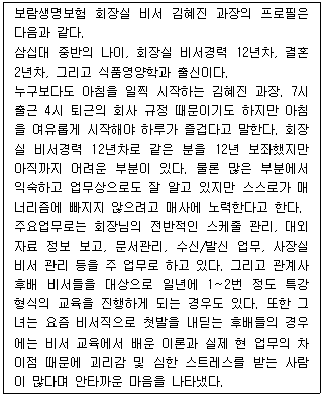
- 신입사원 교육훈련
- 사내 정책수립
- 비서 인사관리
- 비서 전문가 대외활동
(정답률: 72%)
3. 창업주이던 상사 부친의 장례를 회사장으로 치르기로 결정 하였다. 비서 A양이 언론자료를 작성하여 신문사에 보낼 때 반드시 들어가야 할 내용이 아닌 것은?
- 고인의 가족관계
- 고인의 약력과 업적
- 장례위원장의 직함과 이름
- 빈소, 발인, 장지 정보
(정답률: 71%)
4. 다음 중 김일구 사장과 박영구의 전화연결을 하기 전 송선미가 점검해야 할 내용으로 연관성이 가장 낮은 것은?(4번 공통지문 문제)
- 영국의 국제전화 국가번호 재확인
- 국제전화 제3자 요금 부담 서비스
- 회사에서 계약 체결된 국제전화 할인 서비스 제공 통신 사업자 제공번호
- 런던의 지역번호 재확인
(정답률: 58%)
5. 상사는 Mr. Peter Jones 의 10월 1∼2일의 서울방문을 맞이하여 Mr. Jones 와 함께 우리 회사의 주요거래처를 방문하고자 한다. 상사는 주요 거래처 10곳의 명단을 주며 방문 일정을 잡아보라고 지시하였다. 다음 중 비서가 고려해야 할 사항으로 바람직한 것으로만 묶은 것은?
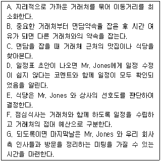
- A, B, C, D, E, G
- A, B, C, E, G
- A, B, C, E, F, G
- A, B, C, D, E, F, G
(정답률: 55%)
6. 다음의 내용 중 비서의 경력개발을 위한 자세로 가장 부적절한 것은?
- 외국계 회사의 비서직 업무 수행을 해외 MBA 취득의 수단으로 활용한다.
- 본인이 속한 조직의 업종에 관련한 공부를 지속적으로 하여 향후 동종업계 이직 기회 발생 시 경력 요소로 활용한다.
- 사내 프로젝트 및 기획에 대한 업무 참여를 통하여 기획에 대한 내용을 익히려고 노력한다.
- 우편물, 문서, 업무일지 등을 통한 직무분석을 통해서도 개인 역량을 증진시킬 수 있음을 이해한다.
(정답률: 58%)
7. 상사는 다음 달에 국제금융시장의 변화와 관련하여 국제금융전문가를 모시고 외부회의를 개최하고자 한다. 초청인원은 약 50명 정도이고 사내에서는 10여명 정도가 참여한다. 회의 시간은 오전 9시부터 오후 5시까지이다. 회의 준비와 관련하여 김비서의 업무처리로 가장 적절하지 않은 것은?
- 김비서는 일시, 장소, 프로그램, 예산, 참석자 명단 등이 포함된 회의기획안을 작성하여 상사의 승인을 받는다.
- 회의 초대장은 회의일보다 최소 15일 전에 초청자들이 받을 수 있도록 한다.
- 불참의사를 밝힌 주요 인사의 경우 다시 연락하여 참석을 부탁한다.
- 외국인 참석자들을 위해 통역 수신기를 참석자의 수보다 조금 더 준비한다.
(정답률: 75%)
8. 한결상사에 근무중인 강비서는 대표이사를 보좌하고 있다. 강비서의 상사는 공식 행사 참석이 빈번하여 행사 드레스코드에 대해 잘 이해하고 있어야 한다. 다음 중 드레스코드에 대한 설명으로 옳지 않은 것은?
- 일반 행사는 평상복이 원칙이다.
- 야회복(white tie)은 상의의 옷자락이 제비 꼬리 모양을 하고 있어 연미복(tail coat)이라고도 하는데 무도회나 정식 만찬 또는 저녁 파티 등에 사용된다.
- 약식 야회복(black tie)은 턱시도(tuxedo)라고도 하며, 정식 만찬 이외의 모든 저녁파티에 입는 격식을 갖춘 정식 야회복이다.
- 평상복(informal)은 lounge suit, business suit 라고도 한다. 평상복의 색깔은 진한 회색이나 감색이 적합하며, 재킷과 바지의 색깔이 다른 것을 입어서는 안 된다.
(정답률: 44%)
9. 상사의 해외출장시 수명(受命)과 보고에 대한 비서의 자발적인 행동으로 가장 바람직하지 않은 것은?
- 상사 출장지인 해외에서도 전자결재가 가능하므로, 업무 지연을 막기 위해 평상시와 같이 상사의 결재를 받도록 관련 부서에 전달하였다.
- 상사 출장시 상사 업무대행자에게 사안을 보고하여 상사의 부재를 최소화하였다.
- 상사 출장 중에 상사의 회신을 요하는 통신문이나 우편물은 우선순위를 정하여 상사에게 알려 회신이 늦어지지 않도록 하였다.
- 매일 회사의 주요사안 및 중요 인물의 전화, 방문 등을 브리핑하는 이메일을 보내고 보충설명이 필요한 경우 상사와 통화하였다.
(정답률: 56%)
10. 다음 중 한비서가 B이사님과 이이사님께 실수한 상황에 대한 대처 방안으로 가장 적절한 것은 무엇인가?(11번 공통지문 문제)
- 외출하시는 B이사님을 따라가서 죄송하다고 말씀드리고, 주의 하겠다고 말씀드린다.
- 이이사님께 사과를 못드렸으므로 집무실에 찾아가 죄송하다고 말씀드린다.
- 이기사님께 연락드려 외출하신 B이사님의 기분이 어떤지 알아보고 돌아오시는대로 바로 집무실에 들어가서 부주의함을 죄송하다고 말씀드린다.
- 선임비서나 다른 비서들에게 B이사님의 발음을 잘 알아들을 수 있는지 물어보고 자신의 문제점을 파악하여 개선하려고 노력한다.
(정답률: 52%)
11. 오피스 매니저 이선영은 사내 전직원의 해외 워크샵을 준비 중이며, 다음은 행사의 간단한 개요이다. 행사 경비의 효율적 관리를 위하여 오피스 매니저가 취한 행동으로 가장 바람직한 것은?
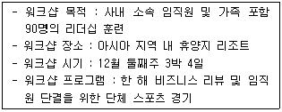
- 사내 직원의 지인이 운영하는 여행사를 섭외하여 경비 절감을 요청한다.
- 해외 워크샵 여행의 시기에 따른 경비 차이가 커서 워크샵의 시기를 비수기 시즌으로 조정할 수 있는지의 여부를 상사에게 타진해 본다.
- 인터넷 검색을 통하여 저렴한 단체 여행 상품을 선택하여 가능하면 워크샵 일정을 그 상품 프로그램에 맞추도록 조정한다.
- 임원의 다른 출장일정과 연계하여 여행 경비를 출장비에 포함 시킬 수 있도록 유도한다.
(정답률: 60%)
12. 다음 중 아래의 상황에서 비서가 업무를 처리한 내용으로 가장 적절하지 못한 것은?
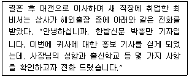
- 회사의 홍보에 도움이 되는 내용인지를 판단해서 가능한 범위 내에서 알려준다.
- 회사 홍보 관련 업무를 맡고 있는 홍보실 담당자에게 전화를 연결해 준다.
- 지금 사장님이 출장 중이라고 하고 연락처를 받아 놓는다.
- 인터넷으로 한밭신문을 검색하여 어떤 성격의 매체인지 확인해 보았다.
(정답률: 69%)
13. 김영희 비서는 한일법률사무소에서 법률비서 업무를 수행하고 있는 경력 3년차 비서로 총무 업무와 변호사 비서 업무를 같이 수행하고 있다. 다음 총무업무 처리방식에 관한 내용중 가장 적절하지 않은 것은?
- 상사의 소액 현금(petty cash) 관리는 금전출납부에 기입하고 영수증과 같은 증빙서류는 따로 보관해 두었다가 관련 부서에 제출한다.
- 회계부서가 따로 있는 사무소에서도 로펌비서는 재정에 관련된 기록들인 회계장부, 영수증, 전표 등을 관리하고 회계사의 업무를 보조하는 등의 재정 업무에 관여한다.
- 법 소송 업무와는 달리 자문 업무는 변호사들의 소요된 시간 및 실제 비용을 기준으로 비용이 산출되므로, 김비서는 시간 기록 및 정리, 수임료 청구 및 회수의 업무를 처리하고 있다.
- 상사가 사용한 카드의 매출 전표는 카드명세서가 도착하면 내역을 확인한 후 폐기 후 카드명세서를 증빙으로 보관해 둔다.
(정답률: 70%)
14. 다음은 비서가 상사로부터 받은 명함이다. 이 중 (가), (나)의 명함을 바르게 읽은 것은?
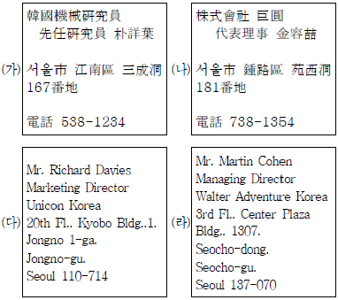
- (가) 한국기계연구원 선임연구원 박상기
- (가) 한국기계연구원 선임연구원 박세기
- (나) 주식회사 거도 대표이사 김용길
- (나) 주식회사 거원 대표이사 김용철
(정답률: 39%)
15. 다음의 의전 설명 중 가장 바르게 제시된 것은?
- 2개국 간 국제회의시 좌석배치(높은 서열순 1→5, a→e)

- 다수국 간 국제회의시 좌석배치(높은 서열순 A→Z)

- 비행기에서 상석은 비행기 종류에 따라 다르지만 최상석은 비행기 내부에서 보았을 때 앞쪽으로부터 왼쪽열 첫 번째 창가좌석으로 보는 경우가 많다.
- 승강기에서 상석은 들어가서 오른쪽의 안쪽, 즉 내부에서 보면 왼쪽 안쪽이며, 상급자가 먼저 타고 먼저 내리는 것이 원칙이다.
(정답률: 63%)
16. 상사가 위의 일정으로 출장을 갔을 때 비서의 업무처리 내용으로 가장 적절한 것은?(18번 공통지문 문제)
- 방문 면담을 원할 경우, 상대방을 확인해서 상사가 출장 중임을 밝히고 6월 24일 저녁부터 면담이 가능함을 알려드린다.
- 상사 출장 중 면담자 목록을 만들어 상사에게 실시간으로 보고하여 지시를 받는다.
- 일정관리를 비서가 모두 일임을 받았을 경우, 상사가 출장에서 돌아온 후의 일정은 상사에게 보고 드린 후 확정한다.
- 22일 오후에 상사와 급하게 연결해야 하는 전화가 있어서 상사에게 바로 문자를 남기고 시카고 숙소에도 메시지를 남겨 놓았다.
(정답률: 51%)
17. 상사가 출장을 마치고 귀사한 후 처리해야 할 비서의 업무로 가장 적절한 것은?(18번 공통지문 문제)
- 출장비용보고서를 작성할 때 출장지에서 사용한 법인카드의 내역을 출력하여 날짜별, 항목별로 기재하여 증빙으로 제출 한다.
- 상사가 미국 출장지에서 받은 명함과 자료들을 정리하고 파일링하며, 결재서류는 날짜순으로 결재가 진행될 수 있도록 정리해 둔다.
- 숙박비, 교통비 등이 회사여비규정에 맞게 집행되었는지 확인하여 정산한다.
- 출장보고서에는 출장기간, 출장자 직위와 이름, 일정과 이용 교통편, 면담자 이름 및 면담 장소, 출장의 성과 등을 기재하여 해당 부서에 제출한다.
(정답률: 51%)
2과목: 경영일반
18. 글로벌 경영과 관련된 다음 설명 중 가장 적절하지 않은 것은?
- 1947년, 23개국의 지도자들은 관세장벽과 수출입 제한을 제거하고 국제무역과 물자교류를 증진시키기 위해 국제적 포럼인 관세무역일반협정(GATT)을 출범시켰다.
- 세계무역기구(WTO)는 회원국들간의 무역관계를 정의하는 많은 수의 협정을 관리 감독하기 위한 기구로서 국가 간의 무역을 보다 자유롭게 보장해 준다.
- 세계무역기구(WTO)는 1947년 시작된 관세 및 무역에 관한 일반협정(GATT)체제를 대체하기 위해 등장했으며, 세계 무역 장벽과 보호무역을 통해 국가경쟁력을 높이기 위한 목적을 가지고 있다.
- 북미자유무역협정(NAFTA)은 미국, 캐나다, 멕시코 사이에 자유무역 지대를 형성하는 것을 목적으로 한다.
(정답률: 47%)
19. 다음 중 일본 정부의 양적완화정책에 따른 엔화의 약세가 한국(국내)관련 업종에 미치는 영향으로 가장 적절하지 않은 것은?
- 엔화 대출기업의 이자 부담이 늘어난다.
- 글로벌 시장에서 일본기업 대비 수출가격 경쟁력이 떨어진다.
- 일본시장으로 제품 수출이 감소되고 성장이 위축된다.
- 일본인 관광객 감소로 여행이나 관광업계의 매출이 감소한다.
(정답률: 52%)
20. 다음 중 기업윤리에 대한 설명으로 가장 적절하지 않은 것은?
- 기업윤리는 사회적 윤리에 관계되는 일반의 인식과 제도 및 입법의 기본 취지를 바탕으로 한다.
- 영리조직으로서 기업조직이 윤리경영을 실천하는 데는 단기적으로나 장기적으로 비용이 증가하고 효율성이 약화되는 측면이 존재한다.
- 현대사회에서 기업윤리가 중요하게 대두되는 이유는 경영 활동의 윤리성이 기업의 내부적 이해관계자뿐만 아니라 외부적 이해관계자에게 미치는 영향이 크기 때문이다.
- 세계적으로 비윤리적 기업 활동이 미치는 부정적 효과가 부각됨에 따라 주요 국가에서는 각국의 상황에 적합한 기업 윤리강령이나 헌장을 채택하고 준수하도록 권장하고 있다.
(정답률: 66%)
21. 다음 중 기업집중의 형태에 대한 설명으로 가장 적절하지 않은 것은?
- 기업연합형태인 카르텔(cartel)은 주로 시장통제를 목적으로 동종 또는 유사 업종간의 신사협정을 통한 기업집중의 형태이다.
- 카르텔(cartel)참가기업들은 법률적으로나 경제적으로 독립성을 유지하면서 협약에 의거, 시장통제에 관한 일정사항에 관해서 협정을 체결한다.
- 시장지배를 목적으로 동종 또는 동일한 생산단계의 기업들이 하나의 자본에 결합되는 강력한 결합 형태는 트러스트(trust)이다.
- 기업집중으로 시장이 몇 개의 기업에 의해 관리되어 소비자와 다른 중소기업에도 이익을 가져다준다.
(정답률: 53%)
22. 다음 중 주식회사의 특징에 대한 설명으로 가장 적절하지 않은 것은?
- 주식회사의 출자자인 주주는 모두 유한책임사원으로서 출자액을 한도로 회사의 적자, 채무, 자본 리스크에 대한 책임을 진다.
- 주식회사는 대중으로부터 대규모의 자본조달이 가능하며, 주주의 개인재산과 주식회사의 재산은 뚜렷이 구별된다.
- 주식회사는 자본과 경영의 분리가 이루어지지 않은 기업의 형태이며, 출자자와 경영자가 공동으로 기업을 지배하게 된다.
- 주식회사의 기관에는 주주총회, 이사회, 감사 등이 있다.
(정답률: 62%)
23. 다음의 기업 형태에 대한 설명으로 가장 적절하지 않은 것은?
- 주식회사의 특징 중 하나는 소유와 경영의 분리이다.
- 주식회사는 다수의 소액투자자들이 자기들의 지분율에 비례하여 회사의 소유권을 가지지만, 경영에 직접 참가하기에는 그 수가 많고 전문적 지식이 없기 때문에 전문적 지식이나 능력을 가진 전문경영인을 고용하여 경영을 맡기는 형태를 띤다.
- 합명회사는 2명 이상의 출자자가 공동으로 출자하여 기업의 채무에 대하여 연대하여 유한책임을 지는 기업형태로서 소유와 경영이 분리된 회사형태이다.
- 합명회사는 무한책임사원만으로 구성되는 회사로 가족적·인적결합의 색채가 짙은 전형적인 인적회사이다.
(정답률: 63%)
24. 다음 중 기업의 인수 및 합병(M&A)에 관련한 설명으로 가장 적절하지 않은 것은?
- 인수 및 합병은 두 개 이상의 조직이 결합해서 보다 큰 조직을 만드는 것을 가리킨다.
- 기업이 새로운 분야에 진출하고자 할 때 이미 그 분야에서 활동하고 있는 기업을 인수 및 합병으로 획득하여 진출함으로써 경영기반을 확립하는데 소요되는 시간을 절약할 수 있다.
- 같은 업종의 기업을 인수 및 합병함으로써 기존시장에서 차지하던 시장점유율을 끌어올릴 수 있다.
- 수평합병은 동종의 산업에 속하지만 생산 활동의 단계가 다른 기업간에 합병하는 것으로 한 제품의 모든 생산단계의 산업을 지배하려는데 그 목적이 있다.
(정답률: 64%)
25. 다음의 지식경영에 대한 설명으로 가장 적절하지 않은 것은?
- 지식경영이란 지식과 정보를 체계적으로 발굴하고 공유함으로써 조직 전체의 문제해결능력을 향상시키는 경영방식이다.
- 지식경영은 지식의 활발한 창출과 공유를 제도화시키는 것을 목표로 한다.
- 지식공유를 촉진할 수 있는 네트워크는 사람들간에 신뢰와 배려가 형성되어 있는 경우이다.
- 지식경영시대에 적합한 조직은 수직적이고 기능중심의 조직이다.
(정답률: 66%)
26. 다음의 조직관리방법 중 목표관리(MBO)에 대한 설명으로 가장 적절하지 않은 것은?
- 효율적인 경영관리체제를 실현하기 위한 경영관리의 기본 수법이다.
- 목표관리의 구성요소는 목표설정, 참여, 피드백이다.
- 주요일정상 당해연도 실적이 집계되기 이전에 다음연도 목표를 수립하게 되어 당해년도 실적은 고려하지 않는다.
- 목표관리는 연봉인상, 성과급 지급뿐 아니라 승진 등 인사 자료로도 활용한다.
(정답률: 67%)
27. 다음 중 매트릭스 조직 특성을 설명한 것으로 가장 적절한 것은?
- 분업과 위계구조를 강조하며 구성원의 행동이 공식적 규정과 절차에 의존하는 조직이다.
- 전체 조직의 각 계층에서 선발된 위원으로 구성되며, 각 부분별 의견차를 극복함으로써 회사의 전반적인 의사결정을 행하는 조직이다.
- 이원적인 권한과 권력의 균형이라는 특성으로 인해 동태적이고 복잡한 환경에서 성장전략을 추구하는 조직체에 적합한 조직이다.
- 특정 과업의 수행을 위해 일정기간 동안 각 소속팀에서 모였다가 그 프로젝트가 완료되면 헤어지는 동태적 조직의 한 형태이다.
(정답률: 45%)
28. 다음 중 마케팅활동의 STP전략 중에서 아래 내용과 관련된 것으로 가장 적절한 것은?
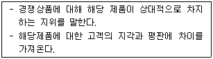
- 표적시장 선정
- 포지셔닝
- 구매자행동분석
- 시장세분화
(정답률: 61%)
29. 다음 중 리더십에 관한 설명으로 가장 적절하지 않은 것은?
- 리더십은 목표와 관련되며 타인에게 영향을 미치는 과정이며, 리더는 구성원들에게 비전을 제시하고 동기를 유발 시키면서 이끌어가는 사람이다.
- 리더십의 특성이론은 리더의 개인적 자질에 의해 리더십의 성공이 좌우된다는 전제 하에 유능한 리더와 그렇지 않은 리더를 구분하는 리더의 개인적 특성 및 자질이 존재한다고 보는 이론이다.
- 리더십의 상황이론은 상황에 따라서 과업지향적 리더가 효과적일 때도 있고, 관계지향적 리더가 효과적일 때도 있다는 것이다.
- 변혁적 리더십은 개인적 이익이나 가치를 중요시하며, 조직과 개인의 경쟁적 관계를 추진력으로 하면서 공동목표를 향해 혁신적으로 이끌어가는 것이다.
(정답률: 53%)
30. 다음의 동기부여이론에 관련한 설명 중 가장 적절한 것은?(오류 신고가 접수된 문제입니다. 반드시 정답과 해설을 확인하시기 바랍니다.)
- 알더퍼의 EFG 이론은 매슬로우의 욕구단계이론이 직면했던 문제점들을 극복하고 보다 실증조사에 부합되게 수정한 이론이다.
- 아담스의 공정성이론은 불공정한 대우와 관련한 것으로 투입보다 산출이 클 때만 생기고, 투입보다 산출이 적을 때는 생기지 않는다는 주장이다.
- 허즈버그의 2요인이론은 보상의 수준이 높다는 사실이 비례적으로 종업원에게 만족감을 주는 요인이라는 주장이다.
- 포터와 로울러의 기대이론은 전통적인 만족 - 사기양양 – 성과와 관련된 이론으로 동기부여 방법은 사람에 따라 다르지 않다는 주장이다.
(정답률: 34%)
31. 인적자원관리활동은 인적자원계획을 수립하는 것으로부터 시작된다. 다음 중 인적자원계획 수립의 활동에 포함되는 것으로 가장 적절하지 않은 것은?
- 불필요한 인적자원을 줄이는 해고계획을 수립하는 활동
- 현재의 종업원과 필요한 종업원 간의 수급불균형을 맞추기 위한 방법을 계획하는 활동
- 종업원의 능력을 개발하기 위한 인적자원개발계획을 수립하는 활동
- 종업원들의 생활수준 유지를 위한 적절한 보상수준을 계획하는 활동
(정답률: 44%)
32. 고용주가 매월 근로소득을 지급할 때 적용하는 것으로, 월급여 및 부양가족에 따른 소득세 원천징수 금액을 지정해 놓은 것과 관련된 용어로 가장 적절한 것은?
- 근로소득 원천징수 지급조서
- 근로소득 간이세액표
- 연말정산 간소화서비스
- 표준근로계약서
(정답률: 39%)
33. 다음 중 개인퇴직연금(IRP)에 대한 설명으로 가장 적절하지 않은 것은?
- 개인 이름으로 개설하는 퇴직연금이다.
- 이직 시에 받은 퇴직금 등을 불입하여 은퇴 후에 연금으로 활용할 수 있다.
- 연말정산시에 세액공제 혜택이 부여된다.
- 은행, 증권사, 보험사에서 판매하며 누구나 가입할 수 있다.
(정답률: 53%)
34. 다음 중 마케팅믹스(Marketing Mix)에 대한 설명으로 가장 적절하지 않은 것은?
- 마케팅 믹스란 목표시장에서 기업의 목표를 달성하기 위하여 통제 가능한 마케팅 변수를 최적으로 배합하는 것을 말한다.
- 통제 가능한 마케팅 변수는 제품(product), 가격(price), 유통경로(place), 촉진(promotion)을 포함한다.
- 제품관리전략이란 시장의 변화를 검토하여 시장의 욕구와 필요에 부응하도록 제품의 구성을 끊임없이 조정하는 것을 말하며, 제품관리의 핵심은 제품수명주기에 대한 이해에 있다.
- 제품수명주기는 신제품이 시장에 도입된 후 판매장소에 따른 인지도 수준을 나타내는 시장공급의 변화패턴을 말한다.
(정답률: 56%)
35. 다음 중 대차대조표에 대한 설명으로 가장 적절하지 않은 것은?
- 회사의 자산은 자기자본과 타인자본으로 이루어지며, 자산 = 자기자본 + 타인자본의 등식에 따라 이를 자세하게 명시해 주는 표가 대차대조표이다.
- 대차대조표의 오른쪽(대변)의 부채 및 자본란은 자금이 어떻게 조달되었는지 보여준다.
- 대차대조표의 왼쪽(차변)의 자산란은 들어온 자금이 어디에 저장되어 있는지 보여준다.
- 대차대조표는 일정 기간의 영업실적을 올리고 그 이익을 내기 위해 어느 정도의 비용을 사용했으며 현재의 총이익은 얼마이며 세금을 낸 후의 순이익은 얼마인지를 정확히 밝히고 있다.
(정답률: 40%)
36. 다음 괄호에 들어갈 재무관련 용어로, 일정기간 동안의 기업의 경영 성과를 한눈에 나타내기 위해 작성하는 재무제표로 기업의 수익발생부분과 지출내역 등을 파악하고 그에 관해 미래를 예측할 수 있는 지표로도 사용되는 것으로 가장 적절한 것은?
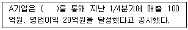
- 재무상태표
- 자본변동표
- 포괄손익계산서
- 이익잉여금처분계산서
(정답률: 46%)
37. 다음의 균형성과표(BSC)에 대한 설명으로 가장 적절하지 않은 것은?
- 균형성과표는 재무적 성과지표와 동시에 비재무적 성과지표를 동시에 고려하는 성과측정이 기업경영에 있어 균형적이고 종합적 정보와 지식을 제공한다는 개념을 바탕으로 하고 있다.
- 균형성과표는 미래지향적인 비재무적 지표를 통합한 평가 시스템이기 때문에 조직의 비전과 전략에 따라 차별적으로 설계, 운용될 수 있다.
- 비재무적 지표는 정량화, 계량화될 수 있고 인과관계가 규명되는 장점이 있다.
- 균형성과표의 구체적 도입과 실행에 있어서는 각 조직의 성격에 맞게 설계되어야 한다.
(정답률: 58%)
3과목: 사무영어
38. Choose one which does not explain departments in company correctly.
- The purchasing department compares prices and discounts from the supplies and buy materials.
- The sales department deals with all the invoices from purchases and others.
- The personnel department is responsible for recruiting new staffs, keeping files on employees, and training them.
- The research and development department improves, adapts and changes the products and plans for technical issues.
(정답률: 36%)
39. Choose the one which is not correctly translated into Korean.
- I am pleased to inform you that we have decided to sign the contract. - 우리가 계약을 체결하기로 결정했음을 알려 드리게 되어 기쁩니다.
- Please, note that our agency will be closed from the 7th until 9th. - 우리 영업소는 7일부터 9일까지 문을 닫으니 유념해 주시기 바랍니다.
- Send me an acknowledgement e-mail as soon as you receive my e-mail. - 당신이 내 이메일을 받고 바로 확인 이메일을 보내주세요.
- Let me know if you experience any difficulties in viewing the file I sent. - 파일은 여는데 어려움이 있으시면 제가 다시 당신에게 파일을 보내드릴 수 있도록 알려 주십시오.
(정답률: 56%)
40. Which of the followings is the most appropriate term for the underlined blank ⓐ?
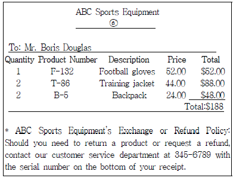
- Check
- Invoice
- Price
- Notice
(정답률: 52%)
41. Fill in the blanks ⓐ~ⓒ with appropriate words.(순서대로 ⓐ, ⓑ, ⓒ)
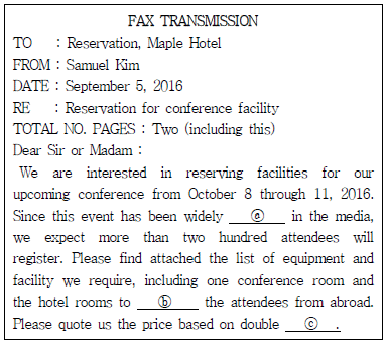
- publicised, accommodate, occupation
- publicized, accommodate, occupants
- publicised, accommodate, occupancy
- publicized, accommodate, occupancy
(정답률: 37%)
42. Choose the one that is the most appropriate purpose for the following message.
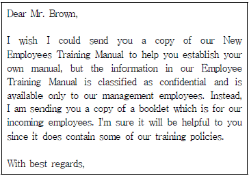
- The purpose of this message is to request a copy of a manual.
- The purpose of this message is to refuse Mr. Brown's information request.
- The purpose of this message is to inquire some information.
- The purpose of this message is to notify the date of shipment.
(정답률: 33%)
43. Choose one statement which is not true about 'Memo'.
- 'Memo' is a short expression for 'memorandum'.
- It is one of the business correspondences.
- It is generally to communicate with people out of the company.
- The subject line is sometimes abbreviated as "SUB."
(정답률: 50%)
44. Read the four dialogues and choose one which does not match each other.
- A : Do you have anything to declare?
B : No, I don't have anything except my personal belongings. - A : I'd like to change some money. I have Korean Won. Do you have Hong Kong Dollars?
B : Sure, how much are you changing? - A : Your bag is overweight.
B : How do I lose my weight? - A : My suitcase hasn't arrived yet.
B : Please fill out this form and describe your bag.
(정답률: 50%)
45. According to the following telephone message, which one is not true?
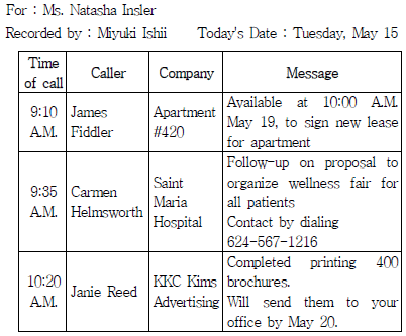
- Carmen is scheduled to make a delivery to Ms. Insler.
- There is a document to sign on May 19.
- Ms. Insler should call Carmen Helmsworth.
- Janie Reed called Natasha on May 15.
(정답률: 36%)
46. Which of the followings does not match the underlined ⓐ~ⓓ?
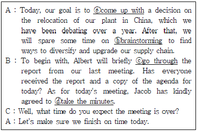
- ⓐ : produce
- ⓑ : putting heads together
- ⓒ : review
- ⓓ : spend a few minutes
(정답률: 33%)
47. According to the following schedule, which one is not true?
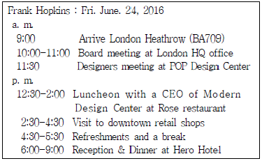
- Mr. Frank has two meetings in a row in the morning.
- Mr. Frank is supposed to have a lunch at Hero Hotel.
- Mr. Frank will go to downtown in the afternoon.
- Reception and dinner will be held for 3 hours.
(정답률: 64%)
48. Read the following conversation and choose one which is true.
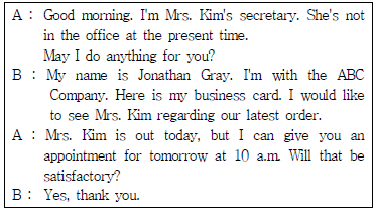
- The visitor handed a present to the secretary.
- The visitor dropped by Mrs. Kim's office to order some items.
- Mrs. Kim was in a meeting at that moment.
- The visitor will come to Mrs. Kim's office again.
(정답률: 59%)
49. According to the conversation below, which is not true?
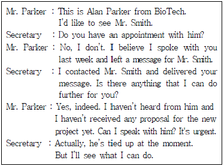
- The secretary failed to deliver the message.
- Mr. Smith didn't call Mr. Parker back.
- Mr. Parker failed to contact Mr. Smith.
- A proposal from Mr. Smith for the new project hasn't been submitted.
(정답률: 48%)
50. Read the following conversation and choose one which is true.
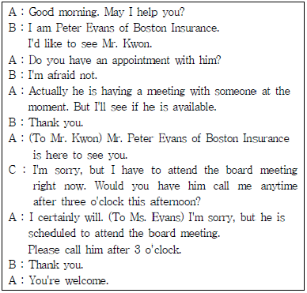
- Mr. Evans and Mr. Kwon have an appointment each other to meet in Mr. Kwon's office.
- The secretary will have Mr. Kwon call Mr. Evans after 3 o'clock.
- Mr. Evans will call Mr. Kwon in the afternoon.
- Mr. Kwon is planning to attend a meeting at 3 p.m.
(정답률: 43%)
51. Which of the followings gives the incorrect explanation?
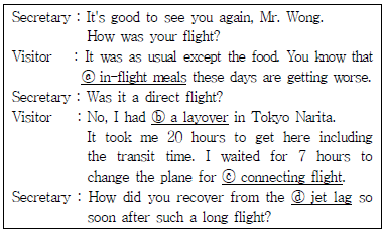
- ⓐ : meals provided to passengers during flight
- ⓑ : a stopover
- ⓒ : a flight with a stop and a change of aircraft
- ⓓ : a time lag caused by jet flights
(정답률: 24%)
52. Which of the followings is the most grammatically correct word?
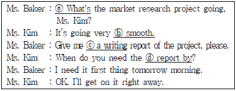
- ⓐ What's
- ⓑ smooth
- ⓒ a writing
- ⓓ report by
(정답률: 26%)
53. Look at the airline e-ticket and choose one which is not informed?
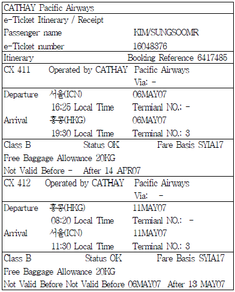
- Whether this is a round-trip or one way ticket.
- What airline the passenger is using.
- When the passenger arrives to Seoul.
- What gate the flight leaves from.
(정답률: 47%)
54. Which of the followings is the most appropriate expression for blanks ⓐ to ⓓ?
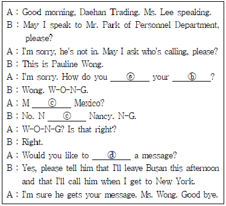
- ⓐ spell, ⓑ surname ,ⓒ as in, ⓓ leave
- ⓐ pronounce, ⓑ given name, ⓒ as of, ⓓ leave
- ⓐ address, ⓑ family name, ⓒ for, ⓓ take
- ⓐ write, ⓑ first name, ⓒ as for, ⓓ receive
(정답률: 45%)
55. According to the conversation, when is Ms. Smith going to check out the hotel?
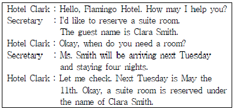
- Tuesday, 11th
- Thursday, 13th
- Friday, 14th
- Saturday, 15th
(정답률: 47%)
56. According to the dialog below, which statement is not true to the conversation?
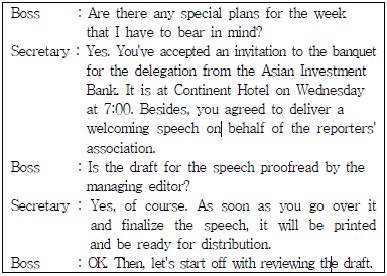
- The boss will be present at the party on Wednesday at 7:00.
- There will be a welcoming speech during the banquet.
- The boss will peruse the draft of his welcoming speech to finalize it.
- The secretary should proofread the draft for the managing editor.
(정답률: 38%)
57. Which of the following alternatives is not included in the suggestions?
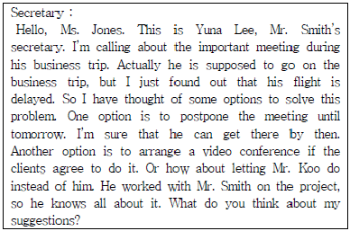
- to delay the meeting until tomorrow
- to arrange a video conference
- to let Mr. Koo do instead of Mr. Smith
- to reschedule the meeting within a week
(정답률: 58%)
4과목: 사무정보관리
58. 회사에서 문서를 수신할 경우 처리방법으로 바른 것끼리 묶인 것은?
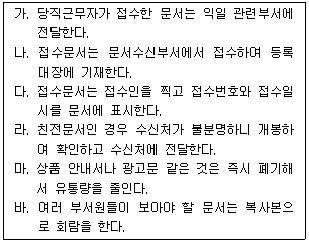
- 가, 나, 다, 마, 바
- 가, 나, 다, 라
- 가, 나, 다, 마
- 가, 나, 다, 바
(정답률: 56%)
59. 신입으로 들어온 김비서의 문서 발신 업무 처리에 대한 내용 중 바람직하지 않은 것끼리 묶인 것은?
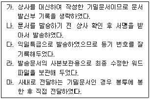
- 가, 라
- 가, 마
- 다, 라
- 다, 마
(정답률: 56%)
60. 다음 우편서비스 중 통화등기(현금배달서비스)에 대한 설명으로 옳은 것으로만 구성된 것은?
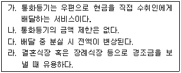
- 가, 다
- 가, 나
- 가, 나, 다
- 가, 다, 라
(정답률: 45%)
61. 다음 중 감사장의 작성 방법에 대한 설명으로 가장 옳지 않은 것은?
- 취임 축하장에 대한 감사장은 축하에 대해서 감사 인사를 한 후 포부와 결의를 밝힌다.
- 창립기념 축하연 참석에 대한 감사장은 먼저 참석에 대한 감사의 말을 전하고 앞으로 협력을 부탁하는 내용을 기술한다.
- 출장 중의 호의에 대한 감사장은 신세를 진 담당자와 그 상사에게 감사의 인사를 기술한다.
- 문상 답례장은 미사여구를 활용한 계절인사 후, 문상에 대한 감사의 글을 쓴다.
(정답률: 57%)
62. 다음 각 비서들의 명함관리 방법에 해당하는 사례에 대한 정리 방법이 순서대로 기입된 것은?
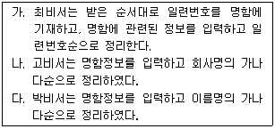
- 주제별 - 주제별 - 명칭별
- 번호식 - 명칭별 - 명칭별
- 번호식 - 주제별 - 명칭별
- 주제별 - 명칭별 - 명칭별
(정답률: 62%)
63. ABC회사는 아래와 같은 전자매체에 대한 회사보안정책을 만들고 배포하였다. 다음 중 이 회사보안 정책을 가장 잘못 이해한 것은?
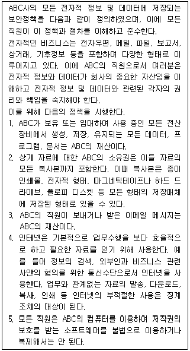
- ABC회사의 메일서버에 있는 개인적 이메일도 모두 회사의 재산이다.
- 대학원에 다니는 상사가 지시한 논문을 다운받아 인쇄하는 것은 정당한 사용이다.
- ABC회사의 컴퓨터에 있는 소프트웨어는 저작권이 없어도 회사재산이다.
- 퇴사 시에 회사 컴퓨터에 저장된 개인자료를 허락없이 복사해가는 것은 회사재산을 탈취하는 행위이다.
(정답률: 35%)
64. 다음 중 전자결재시스템에서 가능한 기능을 모두 고른 것은?
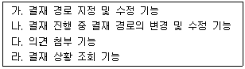
- 가, 나, 다
- 가, 다, 라
- 가, 라
- 가, 나, 다, 라
(정답률: 47%)
65. 사용 목적에 맞는 사무기기와 소모품의 구매가 가장 적절하지 않은 것은?
- 법률사무소에서 일하는 강비서는 서류 위조 방지를 위해 인증천공기를 구매하였다.
- 공기업에서 일하는 박비서는 QR코드와 바코드 인쇄를 위해 라벨프린터와 라벨테이프를 구매했다.
- 연구소에서 일하는 최비서는 전자칠판과 칠판기종에 맞는 용지를 함께 구매하였다.
- 홍보회사에서 일하는 조비서는 회의자료를 제본하기 위해 제본기와 코팅용 필름을 함께 구매했다.
(정답률: 28%)
66. 전자상거래 결제 시 신용카드를 대체하는 전자화폐가 등장하고 있다. 전자화폐의 특징으로 가장 적절하지 않은 것은?
- 누가 어떤 상점에서 무엇을 샀는지를 제3자가 알 수 없어야 한다.
- 다른 사람에게 이전이 가능해야 한다.
- 불법 변조 및 위조가 안 되어야 한다.
- 한국은행에서 발행하며 현금처럼 사용할 수 있어야 한다.
(정답률: 46%)
67. 다음 중 비서의 행동으로 가장 바람직하지 않은 것은?
- 김비서는 상사의 근황에 관해 묻는 방문객의 질문에 일체 답변하지 않았다.
- 박비서는 늦게까지 야근을 할지언정 회사업무를 집으로 가져가 수행하지는 않는다.
- 장비서는 타부서 윗사람이 묻는 질문이 회사 기밀에 관한 것이어서 잘 모르는 사항이라고 답하였다.
- 한비서는 중요서류는 전자 잠금장치가 있는 서류함에 보관하고 수시로 비밀번호를 변경한다.
(정답률: 64%)
68. 반도체 업체에서 일하는 조정민 비서의 행동 중 잘못된 것으로만 묶인 것은?
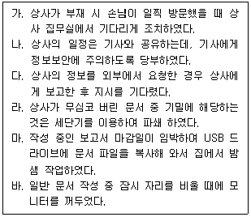
- 다, 마
- 마, 바
- 가, 바
- 가, 마
(정답률: 64%)
69. 상사로부터 프레젠테이션 자료제작을 부탁받은 비서들이 사용하는 방법으로 가장 적절하지 않은 것은?
- 박비서는 문장보다 키워드로 구성된 도해, 그림, 사진으로 이미지화하였다.
- 황비서는 모든 컨텐츠에 효과를 주어서 화려하게 작성했다.
- 정비서는 중요 부분은 하이라이트 칼라를 사용해 강조했다.
- 윤비서는 템플릿을 이용하여 폰트, 색감, 레이아웃에 통일성을 주었다.
(정답률: 68%)
70. 다음 중 PDF 파일에 대한 설명으로 가장 옳지 않은 것은?
- 컴퓨터 기종에 관계없이 호환이 가능한 문서 형식이다.
- 소프트웨어 종류에 관계없이 호환이 가능한 문서 형식이다.
- 암호화 및 압축 기술을 통해 내용의 변조가 어렵다.
- 문서 형식이나 제작 기술에 독점적인 기술이 사용된다.
(정답률: 50%)
71. 다음 중 클라우드 사무환경에 관련하여 가장 올바른 설명은?
- 개인이 업무수행을 위해 필요한 소프트웨어만 다운받아 설치하여 사용한다.
- 인사이동시 필요한 자료를 저장하여 이동하지 않아도 된다.
- 출장 등 원격근무를 할 때 필요한 자료를 USB에 저장하여 사용하기 용이하다.
- 자료를 별도의 데이터 센터에 통합하여 저장하므로 정보 유출 및 손실에 대한 우려가 증가한다.
(정답률: 43%)
72. 다음은 김비서가 상사에게 받은 명함이다. 정리순서대로 나열한 것은?
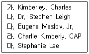
- 라 - 나 - 다 - 가 – 마
- 가 - 라 - 마 - 나 - 다
- 가 - 라 - 나 - 마 – 다
- 라 - 가 - 마 - 나 - 다
(정답률: 44%)
73. 다음은 인터넷 사용 중 발생한 피해 사례에 관한 내용이다. A와 B가 각각 어떤 범죄에
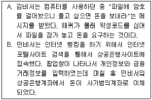
- 하이재커 – 피싱
- 하이재커 - 파밍
- 랜섬웨어 – 피싱
- 랜섬웨어 - 파밍
(정답률: 49%)
74. 다음은 상공주식회사의 위임전결기준표의 일부이다. 이에 따른 문서 처리방법이 가장 올바른 것은?
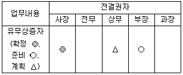
- 무상증자 계획에 관한 문서를 부장이 전결하였다.
- 유상증자 계획을 위하여 상무 부재중에 전무가 대결하였다.
- 유상증자 확정을 위한 문서를 사장 출장 중에 상무가 대결하였다.
- 무상증자 준비를 위한 문서를 부장이 전결하였다.
(정답률: 60%)
75. 다음 중 밑줄 친 부분의 맞춤법 사용이 가장 올바른 것은?
- 친구가 힘들게 해도 되갚는 것은 옳지 않다.
- 오랫만에 옛 동료를 만나서 반가웠다.
- 비서로써 갖추어야 할 역량은 무엇인가?
- 신제품이 날개 돋친 듯이 팔렸다.
(정답률: 31%)
76. 다음 그래프를 통해서 알 수 있는 내용으로 가장 올바른 것은?
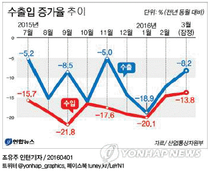
- 2016년 2월에는 2015년 2월에 비해서 수출보다 수입 감소율이 더 높다.
- 2016년 2월보다 2016년 3월 수출입량이 증가한 것으로 잠재 조사되었다.
- 2015년 9월에는 전월에 비해서 수입량은 감소했으나, 수출량은 증가하였다.
- 2015년 11월에는 2014년 11월에 비해서 수출이 증가하였다.
(정답률: 23%)
77. 다음 기사 내용을 통해서 알 수 있는 내용과 가장 거리가 먼 것은?
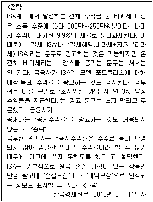
- ISA는 수익금 일부에 대해서만 비과세가 가능하다.
- 금융사가 ISA 수익률을 공시하는 것은 가능하다.
- ISA계좌 수익금 중 비과세 외 수익은 종합과세 되지 않는다.
- ISA는 원금이 손실될 수도 있으므로 이익보장이라고 표시할 수 없다.
(정답률: 22%)